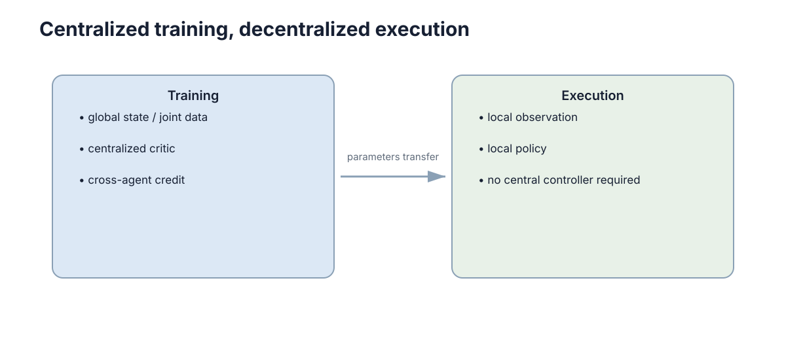

Multi-Agent Learning & CTDE
多智能体强化学习（MARL）不是简单让每个 Agent 各跑一个 PPO。关键矛盾是：训练时可以合法地使用全局信息，而部署时每个 Agent 必须只靠自己拿得到的东西行动。 CTDE（Centralized Training, Decentralized Execution）不是一个算法，而是一组约束：它规定“信息在哪里可以用、在哪里不可以用”，然后所有具体算法（VDN、QMIX、COMA、MAPPO）都是在这组约束下做出的不同取舍。
理解 MARL 的正确顺序是：先看清执行期的信息边界，再看独立学习为什么非平稳，再看团队奖励如何拆到个体，最后才看具体算法。反过来先背算法名单，几乎必然会在“训练指标很好、实机无法部署”或“总回报上升、个体行为塌缩”这两类问题上翻车。

分散执行的信息约束
执行阶段，第 \(i\) 个主体只能根据自己的信息选择动作：
其中 \(\tau_i\) 表示主体 \(i\) 的局部观测历史，可以包含自身观测、收到的消息和自己过去的动作。这里最容易犯的错误是把 \(\tau_i\) 悄悄换成全局状态 \(s\)：训练时一切正常，部署时才发现拿不到。
形式化的硬约束是三条：
- 可观测性约束：\(\tau_i\) 必须是由部署时实际可获取的数据流生成的函数，不能依赖任何集中式组件的输出；
- 因果约束：\(\tau_i\) 只能包含 \(t\) 时刻及之前的信息，不能包含 \(t+1\) 的观测或本轮结束后才知道的全局量；
- 通信约束：如果 \(\tau_i\) 包含其他主体的消息，就必须把消息延迟 \(\delta\)、丢包率 \(p_{loss}\) 和带宽上限一起纳入设计，否则 CTDE 只是把泄漏从状态挪到了通信。
训练阶段通常可以使用集中采集的数据，因此 Critic 可以看到更多信息：个体价值 \(Q_i(s,\mathbf a)\)，或团队价值 \(Q_{tot}(s,\mathbf a)\)。这就是 CTDE 的基本分工——Critic 允许“作弊”，Actor 不允许。
关键判据是：任何一个进入 Actor 输入的变量，都要能回答“部署时这个数从哪来、延迟多大、缺失时怎么办”。 回答不了，就说明执行信息泄漏了。
集中训练分散执行的信息流
CTDE 之所以能同时缓解非平稳性和保留可执行性，原因在于它把“学习信号”和“决策输入”拆成了两条不同的通道。定义三个信息集：
- 全局状态 \(s\)：所有主体的状态与任务上下文，训练期由模拟器或集中式数据收集器提供；
- 联合观测 \(\boldsymbol o=\{o_1,\dots,o_n\}\)：各主体的观测集合，\(o_i\) 通常只是 \(s\) 的部分投影；
- 局部观测 \(o_i\)（或历史 \(\tau_i\)）：主体 \(i\) 自己在部署时真正能拿到的全部信息。
三者的关系满足 \(o_i\subseteq \boldsymbol o\subseteq s\)（在信息含义上，而非严格集合包含）。下表给出它们在训练与执行两个阶段的可用性：
| 信息集 | 训练期可用 | 执行期可用 | 典型消费者 | 泄漏后果 |
|---|---|---|---|---|
| 全局状态 \(s\) | 是 | 否 | 集中式 Critic、mixing network | Actor 依赖 \(s\) → 无法部署 |
| 联合观测 \(\boldsymbol o\) | 是 | 否 | 集中式 Critic、参数共享主干 | 训练/执行分布不一致 |
| 局部观测 \(o_i\) | 是 | 是 | Actor、个体价值头 | 无（安全输入） |
| 通信消息 \(m_{j\to i}\) | 是 | 是（受延迟/丢包限制） | Actor | 需按 \(\delta,p_{loss}\) 注入噪声训练 |
关键在于：Actor 的策略分布条件在执行期和训练期必须一致，即
而 Critic 的价值估计只在训练期被使用，因此允许以 \(s\) 为条件。训练期 Critic 看到 \(s\)，等于把“其他主体的当前状态和意图”从不可解释的噪声变成了显式变量；执行期 Actor 丢掉 \(s\)，等于保住了可执行性。这就是 CTDE 的核心信息流设计。
风险也在同一张表里：如果 \(s\) 与 \(o_i\) 的信息差距过大（例如 \(s\) 包含全场目标分配而 \(o_i\) 只有 5 m 半径），Critic 的准确优势估计会诱导 Actor 去拟合自己根本感知不到的因素，表现为策略抖动——训练回报高、执行回报显著低。判断方法是做信息消融：把 Critic 的输入从 \(s\) 换成 \(\boldsymbol o\) 再换成 \(o_i\)，看执行回报下降多少；下降越小，说明策略越不依赖全局信息。
独立学习的非平稳性
如果每个主体把其他学习者当成环境的一部分，那么其他策略一更新，自己的转移与奖励分布也跟着变。写出来就是：主体 \(i\) 面对的“环境”实际是
它显式依赖其他主体的联合策略 \(\pi_{-i}\)。当 \(\pi_{-i}\) 更新时，\(P_i\) 就变了，MDP 的平稳性假设直接失效。
因此同一条旧经验 \((s,a_i,r_i,s')\) 可能是在完全不同的对手策略下产生的。经验回放、价值估计和策略更新都会因此更难稳定：Q 目标里的 bootstrap 项 \(r_i+\gamma\max_{a_i'}Q_i(s',a_i')\) 隐含假设 \(s'\) 之后的动力学不变，而这个假设被 \(\pi_{-i}\) 的更新破坏。
常见的缓解手段有三类，代价各不相同：
| 手段 | 机制 | 消除非平稳性吗 | 主要代价 |
|---|---|---|---|
| 集中式 Critic | 把 \(\pi_{-i}\) 的影响显式纳入 \(Q(s,\mathbf a)\) | 部分（变成可学习变量） | 训练期需要 \(s\) 与联合动作 |
| 经验回放 | 复用旧样本，提高样本效率 | 否，反而放大陈旧样本问题 | 样本陈旧导致目标偏差 |
| 对手建模 | 显式估计 \(\hat\pi_{-i}\)，写入状态 | 是（若估计准确） | 观测受限时估计误差大 |
| 分阶段更新 | 冻结 \(\pi_{-i}\) 若干步再更新 | 只在冻结窗口内成立 | 收敛慢、易陷局部均衡 |
注意“经验回放”在这里的角色与单智能体不同：单智能体里回放是纯收益，多智能体里它是收益与偏差并存的交易。
非平稳性的定量表征
要做到“可度量”，可以把非平稳性写成对手策略变化的幅度。设主体 \(i\) 观察到的对手联合策略在 \(k\) 步内变化
用总变差距离度量策略分布的移动量。它和价值的更新置信度之间有一个近似关系：若 \(Q_i\) 的估计误差为 \(\sigma_Q\)，且 Q 目标在 \(k\) 步内覆盖的策略变化为 \(\Delta_{-i}^{(k)}\)，则目标函数的有效偏差量级约为
其中 \(L_Q\) 是 \(Q\) 对策略 Lipschitz 常数（协作任务中典型值 1–10，取决于奖励尺度），\(b_{\text{est}}\) 是函数逼近偏差。这个式子的实用读法：对手策略动得越快，你手里的旧 Q 就越不可信；Q 越不可信，就应越下调自举权重或缩短回放窗口。
经验回放的滞后可以用“样本年龄” \(T_{age}\) 表示（当前步减去样本产生步）。下表给出不同算法依赖下的可容忍滞后经验区间：
| 算法族 | 依赖项 | 典型可容忍 \(T_{age}\) | 超标后的现象 | 缓解 |
|---|---|---|---|---|
| 独立 Q-learning | \(Q_i(s,a_i)\) 自举 | 5k–20k step | 价值震荡、策略反复横跳 | 减小回放、降低学习率 |
| 集中 Q 学习（VDN/QMIX） | \(Q_{tot}(s,\mathbf a)\) 自举 | 20k–100k step | 混网络过拟合旧联合动作 | 优先级回放、重采样近期 |
| 集中 Critic 策略梯度（MAPPO） | GAE 优势 \(\hat A_i\) | 一个 epoch 内（\(T_{age}\approx 0\)） | 优势估计与当前策略不匹配 | 每轮重新收集、限制 epoch |
| 显式对手模型 | \(\hat\pi_{-i}\) 预测 | 1k–10k step | 对手建模滞后，策略被反制 | 高预测频率、加不确定性 |
定量监测可以只用一个统计量：归一化创新式的策略差异，
若 \(\chi^2\gg 1\) 且随 \(T_{age}\) 单调上升，就说明回放缓冲里混入了过旧的对策版本。这一步的工程价值在于：它把“感觉训练不稳”变成了一个可以画曲线的诊断量。
合作任务里的信用分配
共享团队奖励只告诉我们“这次整体好不好”，却不直接告诉每个主体自己的动作贡献有多大。形式化地，团队回报
对每个主体都是同一个数，而主体 \(i\) 需要的却是 \(\partial \mathbb E[G\mid a_i\ \text{被替换}]\) 这类反事实量。
一种思路是使用反事实基线：固定其他主体动作，只对主体 \(i\) 的动作做边际化：
它回答的是：在其他人不变时，我当前动作比我自己的平均选择好多少？ 用这个优势替代团队回报做策略梯度的权重，梯度估计变为
它的期望仍无偏（因为基线项对 \(a_i\) 的期望为零），但方差显著低于直接用 \(G_t\)。主体越多、团队奖励越稀疏，这个方差收益越大。
信用分配与反事实基线
COMA（Counterfactual Multi-Agent）是上述思想最经典的落地：一个集中式 Critic 输出 \(Q(s,\mathbf a)\)，然后在求 \(A_i\) 时对 \(a_i\) 做枚举边际化。它的核心代价是每个主体都要在动作空间上做一次完整枚举，复杂度 \(O(n\cdot |A|)\) 次 Critic 前向；动作空间离散且小时完全可行，连续动作则必须改用采样近似。
从团队奖励到个体优势的分解，可以统一写成下面三步：
其中 \(w_i\) 是贡献权重，\(w_i\in[0,1]\) 且 \(\sum_i w_i=1\)。反事实基线相当于令
即用“替换我自己的动作造成的价值差”占“团队优势”的比例来分配功劳。这一步的意义在于：它是唯一一个不引入额外网络就得到个体级信号的机制，缺点是依赖 Critic 精度，Critic 一偏，权重就偏。
四种主流信用分配方法的代价与效果对比：
| 方法 | 信号来源 | 计算代价 | 偏差/方差 | 适用条件 | 主要失效模式 |
|---|---|---|---|---|---|
| 全局团队奖励直传 | \(G_t^{\text{team}}\) | 最低（\(O(1)\)） | 无偏但方差极大 | 主体数 \(\le 3\) | 主体多时几乎无梯度信号 |
| 反事实基线（COMA） | \(Q(s,\mathbf a)\) 边际化 | \(O(n\cdot\lvert A\rvert)\) 次前向 | 低方差、依赖 Critic 精度 | 离散小动作空间 | 动作空间大时不可算 |
| 值分解（VDN/QMIX） | \(\partial Q_i\) 加权 | 一次混网络前向 | 受单调性假设约束 | 合作、可参数化 | 单调性不成立时次优 |
| 差分奖励塑形 | 手写局部 reward | 低 | 无偏但需人工设计 | 任务结构清晰 | 塑形不当改变最优策略 |
一句话判据：主体数少、奖励稠密 → 直接用团队回报；动作离散且小 → 反事实基线；纯合作且能接受单调性 → 值分解；任务结构明确可写局部奖励 → 差分塑形。
值分解：让团队价值可以支持分散决策
合作 MARL 的一个代表思路是把团队价值写成个体价值的组合，从而让 \(Q_{tot}\) 的贪心解可以分解成个体贪心解。
VDN：直接相加
这种假设简单：个体贪心 \(a_i^*=\arg\max_{a_i}Q_i\) 天然构成团队贪心，因为导数恒为 \(\partial Q_{tot}/\partial Q_i=1\)。但它无法表达复杂的非线性协同，例如“两人都到位才开门”这类价值函数在 \(Q_{tot}\) 曲面上是阶跃的，加法无法表示。
QMIX：单调混合
QMIX 使用一个 mixing network 组合个体价值，并限制
这样如果每个主体各自选择让 \(Q_i\) 最大的动作，就能与联合价值的贪心选择保持一致。
需要注意：单调性是一种结构假设，不是所有合作任务都满足。QMIX 的意义在于用可分散执行换取一类可表达的联合价值，而不是“解决所有协作问题”。文献中那类必须“牺牲自己换团队最优”的任务（例如一名主体主动承担高代价拦截）会违反单调性，此时 QMIX 结构上就无法精确表达最优 \(Q_{tot}\)。
| 分解方式 | 表达力 | 可分散贪心 | 参数化形式 | 违反时的现象 |
|---|---|---|---|---|
| VDN | 线性加性 | 是 | \(Q_{tot}=\sum_i Q_i\) | 无法表示协同/门控行为 |
| QMIX | 单调非线性 | 是 | 超网络 + 非负权重 | 牺牲型最优被排除 |
| QTRAN | 一般加性投影 | 部分（需软约束） | \(Q_{tot}\) 与 \(\sum Q_i\) 的误差项 | 约束松弛后分解不再严格 |
| 完全集中 Critic | 任意 | 否 | 直接学 \(Q_{tot}(s,\mathbf a)\) | 需枚举联合动作才能取 max |
策略梯度路线：MAPPO 代表了什么
另一条路线直接学习分散 Actor，同时使用集中式 Critic。它的信息流是：
| 角色 | 训练期输入 | 执行期输入 | 是否可直接部署 |
|---|---|---|---|
| Actor \(\pi_\theta(a_i\mid\tau_i)\) | \(\tau_i\)（仅局部） | \(\tau_i\) | 是 |
| Critic \(V_\phi(s)\) 或 \(V_\phi(\boldsymbol o)\) | 全局状态 \(s\) | 不参与 | 不适用（训练期专用） |
Actor 仍然只吃部署时能获得的信息；Critic 在训练时利用全局状态，给 Actor 提供更好的 advantage 估计。核心还是 PPO 的 clipped objective：
其中 \(\rho_t(\theta)=\pi_\theta(a_i\mid\tau_i)/\pi_{\theta_{\text{old}}}(a_i\mid\tau_i)\)，\(\epsilon\) 典型取 0.2。区别只在于 \(\hat A_t\) 由集中式 Critic 用 GAE 估计，\(\hat A_t=\sum_{l}\gamma^{l}\lambda^{l}\delta_{t+l}\)，\(\delta_t=r_t+\gamma V_\phi(s_{t+1})-V_\phi(s_t)\)。
MAPPO 在实践中有效的原因可以归纳为三点量化事实：使用 \(s\) 而非 \(o_i\) 作为 Critic 输入通常把优势估计方差降低一个量级；权值共享使样本效率提升约 \(n\) 倍；\(\epsilon=0.2\)、GAE \(\lambda=0.95\) 这两个默认值对协作任务的敏感性远低于单智能体。因此学习 MAPPO 时最重要的是先掌握 PPO 和 CTDE，而不是背实现细节。
参数共享什么时候有用
如果多个主体结构相同、动作语义相同，可以共享 Actor 参数：
这样能显著减少参数量并共享经验。但如果不同主体角色差异很大，共享一个完全相同的策略可能反而限制表达能力——极端的反例是异质团队（一个侦察 + 一个搬运），共享策略会让网络在两套完全不同的最优行为之间摇摆，表现为每个角色的动作方差都升高。
常见做法是共享主干网络，同时增加 agent ID、角色 embedding 或局部任务信息，让同一网络仍能表现出不同角色行为：
其中 \(e_i\) 是主体的身份/角色编码。判断该不该共享，可以看一个简单指标：共享与不共享两种设置下的执行回报比。若比值 \(\ge 0.95\)，共享的样本效率收益几乎总是值得；若 \(<0.8\)，说明角色差异被压制，应改为部分共享。
| 共享策略 | 参数量 | 样本效率 | 异质团队适用性 | 典型症状 |
|---|---|---|---|---|
| 完全共享（无 \(e_i\)） | 最小 | 最高 | 差 | 角色行为塌缩成一类 |
| 共享主干 + role embedding | 小 | 高 | 良好 | 需调 embedding 维度 |
| 仅共享 Critic | 中 | 中 | 好 | 参数量随 \(n\) 上升 |
| 完全不共享 | 最大 | 低 | 最好 | 小样本下过拟合 |
MARL 训练检查项
- 执行信息是否泄漏：Actor 有没有偷偷使用部署时不存在的全局信息；做法是把 \(\tau_i\) 的构造代码单独拿出来，逐字段核对部署数据流。
- 奖励是否可归因：团队奖励是否稀疏到几乎无法学习；做法是统计“获得非零团队奖励的步数占比”，若低于 1% 且主体数 \(>4\)，必须先做奖励设计。
- 联合行为是否退化：所有主体是否学成同一动作、互相等待或反复抢同一任务；做法是统计动作熵 \(H(a_i)\) 与主体间动作相关系数 \(\rho_{ij}\)，\(\rho_{ij}\to 1\) 是塌缩信号。
- 评估是否只看总回报：还要看碰撞、任务覆盖、负载均衡和策略稳定性。
对应的失败模式与首选排查动作：
| 失败模式 | 可观测信号 | 最可能原因 | 首选排查 |
|---|---|---|---|
| 训练回报涨、执行回报崩 | 两者差距 \(>30\%\) | 执行信息泄漏 | 消融 Critic 输入，逐字段审 \(\tau_i\) |
| 价值震荡不收敛 | \(\chi^2\gg 1\) 且随 \(T_{age}\) 上升 | 回放样本过旧 | 缩短回放窗口、降自举权重 |
| 全员同动作 | 动作熵 \(\to 0\) | 奖励无区分度 / 过度参数共享 | 加 role embedding、加局部奖励 |
| 反复抢同一任务 | 任务分配冲突率高 | 信用分配缺失 | 引入反事实基线或分配约束 |
| 换队友后性能骤降 | 队友替换测试落差 \(>50\%\) | 对特定队友过拟合 | 训练期做队友策略随机化 |
多智能体学习真正需要建立的框架只有两条代表路线：
- 价值分解：QMIX —— 解决合作价值怎样分解并支持分散执行；
- 策略梯度：MAPPO —— 用集中式 Critic 帮助多个分散 Actor 学习。
其他 MARL 算法可以在遇到具体限制时再扩展，不需要在第一次学习时形成算法名单。
评估不能只看团队总回报
团队回报上升可能掩盖个别 Agent 长期闲置、角色塌缩或对特定队友过拟合。一个可用的事实判据是：若第 \(i\) 个主体被替换成一个随机策略后，团队回报下降不足 5%，说明它的实际贡献接近于零，此时“高回报”来自其余主体。
评估 MARL 时至少应同时报告下面几类量：
| 评估维度 | 具体指标 | 合格线（经验值） | 退化信号 |
|---|---|---|---|
| 团队性能 | 平均团队回报 | 与基线比 \(\ge 1.0\) | 低于随机探索基线 |
| 个体贡献 | 反事实替换后的回报落差 | 每个主体 \(\ge 5\%\) | 存在主体落差 \(\approx 0\) |
| 策略多样性 | 主体间动作分布距离 | 大于 0 且不塌缩 | 距离 \(\to 0\) |
| 队友鲁棒性 | 新队友组合下的回报保持率 | \(\ge 0.7\) | \(<0.5\) |
| 通信鲁棒性 | 丢包 \(p_{loss}=0.2\) 下的保持率 | \(\ge 0.8\) | 骤降至随机水平 |
| 稳定性 | 跨随机种子回报标准差 | \(\le 10\%\) 均值 | 种子间差异巨大 |
最后一条经验：能通过队友替换和通信中断测试的策略，才算学到了协作；只能在自己训练组合里跑通的，通常只是巧合。 评估集必须包含训练期从未出现的队友与通信条件，否则测出来的仍是训练分布内的记忆能力。
下一步：继续阅读 协作与共识机制 了解策略之上的分配层设计，用 通信与信息共享 处理 \(\tau_i\) 中消息通道的延迟与丢包，回到 任务分配与分布式决策 看全局目标如何落到个体，并对照 多智能体系统导论 补齐智能体结构前提，算法基础则参考 策略梯度与 Actor-Critic。